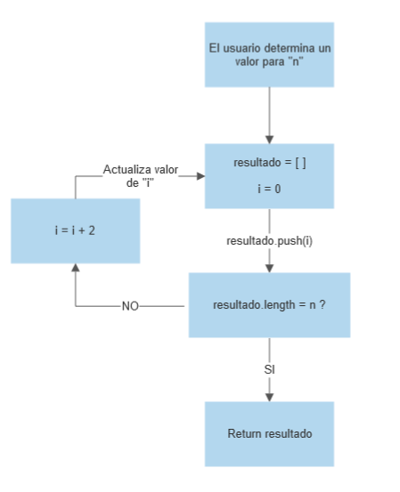
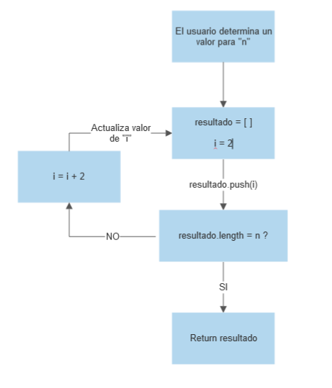
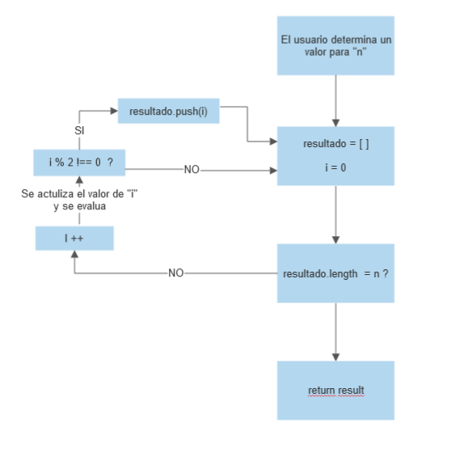
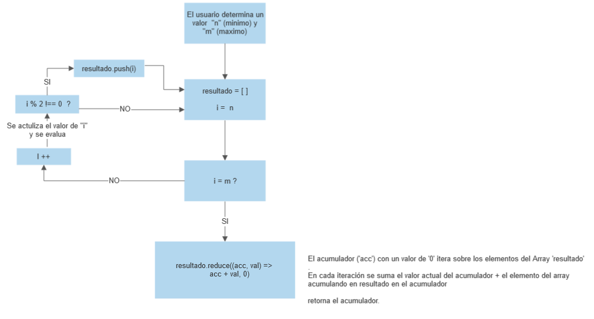
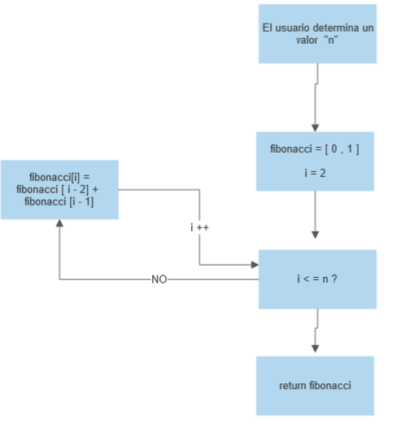

SOLO PARES
En este problema deberán mostrar elementos dependiendo de una condición.
Parte 1
Deberán crear un programa, el cual deberá recibir un parámetro n ingresadopor el usuario, y mostrar los primeros 'n' pares.
SOLUCION
const pares = (n) => {
let resultado = []
for (let i = 0; resultado.length <= n - 1 ; i += 2){
resultado.push(i)
}
return resultado
}
Donde en el almacen 'resultado' a traves de una iteracion y el metodo .push() se alacenan los numeros
partiendo desde 0 y sumando 2 en cada iteracion una cantidad 'n' de veces.
El resultado es un Array con 'n' cantidad de numeros pares partiendo desde el 0

Parte 2
Ahora deberán crear el programa, donde no se considere el cero. Si 'n = 4', la salida del programa deberá ser:
[2, 4, 6 , 8]
SOLUCION
const pares2 = (n) => {
let resultado = []
for (let i = 2; resultado.length <= n - 1 ; i += 2){
resultado.push(i)
}
return resultado
}
La funcion tiene el mismo funcionamiento que el ejercicio anterior, cambiando el valor inicial de 'i' en el bucle
asi omitimos el 0 como primer elemento

SUMA IMPARES
En este problema realizaremos sumatorias, con la condición que el número a sumar será impar.
Parte 1
Crea programa donde se sumen todos los valores impares desde 0 hasta n, donde 'n' es ingresado por el usuario.
SOLUCION
const sumaInpares = (n) =>{
let resultado = []
for(let i = 0 ; i <= n ; i++) {
if(i%2 !== 0) {
resultado.push(i)
}
}
return resultado.reduce((acc, val) =>
acc + val, 0)
}
Mediante un bucle se almacenan los numeros en un Array desde 'i = 0', hasta 'n' si cumplen la condicion 'i % 2 !== 0'.En el Array resultante se aplica el metodo .reduce() para obtener un valor unico resusltado de la suma de los elementos del Array.

Parte 2
Crear programa, donde el usuario ingresa dos valores, el límite inferior (min) y superior(max) del intervalo para realizar la suma de los impares. Si 'min= 6' y 'max=30' , la salida del programa deberá saber: "216"
SOLUCION
const sumaDesdeHasta = (n, m) => {
let resultado = [];
for(let i = +n ; i <= +m ; i++) {
if(i%2 !== 0) {
resultado.push(i)
}
}
return resultado.reduce((acc, val) =>
acc + val, 0)
}
Bajo la misma logica del ejercicio anterior se almacenan los numeros que cumplan la condicion "i % 2 !== 0" con la diferencia
que el valor inicial del bucle ya no es "i = 0", sino que esta determinado por un valor establecido por usuario En el Array resultante se aplica el metodo .reduce() para obtener un valor unico resusltado de la suma de los elementos del Array.

SECUENCIA DE FIBONACCI
La secuencia de Fibonacci se caracteriza donde el siguiente número de la secuencia es la suma de
los dos anteriores.
0, 1, 1, 2, 3, 5, 8, 13, 21, 34, 55, 89, 144, ...
Donde F(0) = 0 F(1) = 1 F(2) = 1 F(3) = 2 F(4) = 3 F(n) = F(n-1) + F (n-2)
Requerimiento
Se debe crear un programa que reciba un numero ingresado por el usuario, que indique cuántos elementos de la serie de Fibonacci se deben mostrar, y el programa debe mostrar los primeros n números de la secuencia de Fibonacci.
Si se ingresa n = 7, se debe mostrar el siguiente resultado
0, 1, 1, 2, 3, 5, 8, 13
SOLUCION
const seqFibonacci = (n) => {
let fibonacci = [0 , 1]
for ( let i = 2; i <= n ; i ++ ) {
fibonacci[i] = fibonacci[i - 2] + fibonacci[i -1]
}
return fibonacci
};
Partiendo con una variable 'fibonacci=[0 ,1]' y una variable 'i = 2' como base. Se evalua "i < n", de ser asi se agrega el indice 'i' en el Array fibonacci y se le asigna el valor del resultado de la suma de sus 2 valores anteriores dentro del mismo array.
Se agregan indices hasta que 'i' sea igual a 'n' retornando la secuencia Fibonacci.
